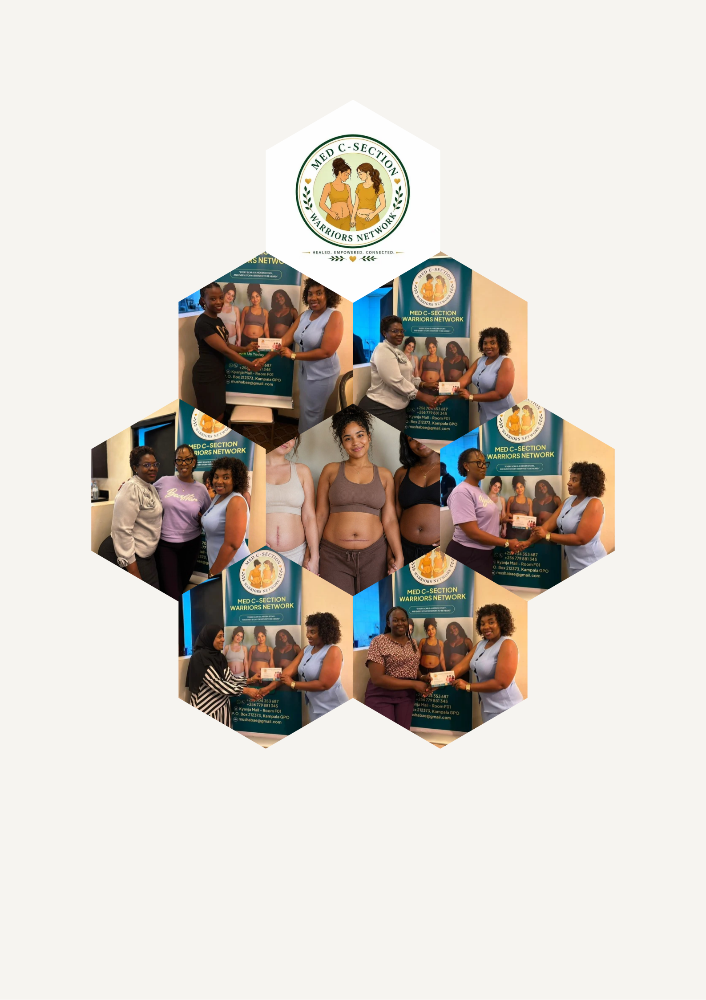

Support
Connect with other women who understand cesarean recovery, stigma, and the realities of motherhood after surgery.
Membership
Membership connects you to a compassionate network of mothers, advocates, professionals, and allies working to improve the maternal health journey. Become part of a growing community of mothers, healthcare professionals, partners, researchers, volunteers, and advocates across the globe working together to improve maternal healthcare.
Why become a member

Connect with other women who understand cesarean recovery, stigma, and the realities of motherhood after surgery.
Access webinars, practical workshops, recovery resources, and guidance on health, advocacy, and emotional well-being.
Participate in community action, awareness campaigns, and leadership opportunities that create positive change.
We welcome mothers, families, healthcare professionals, volunteers, students, advocates, and community partners who believe in better maternal and postpartum support.
Apply for membership